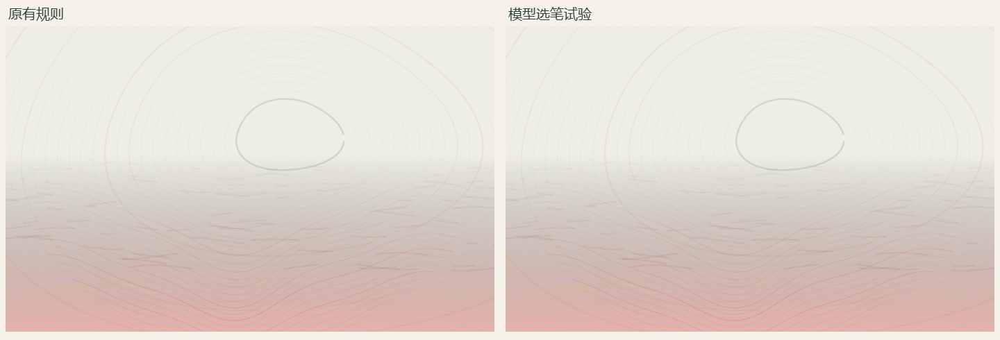
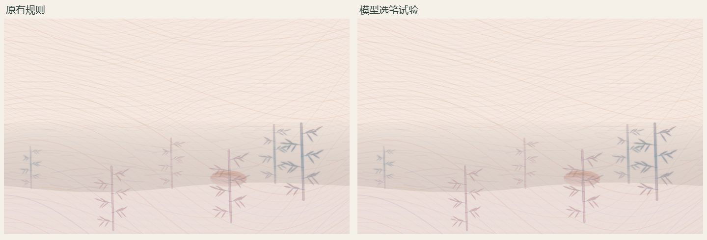
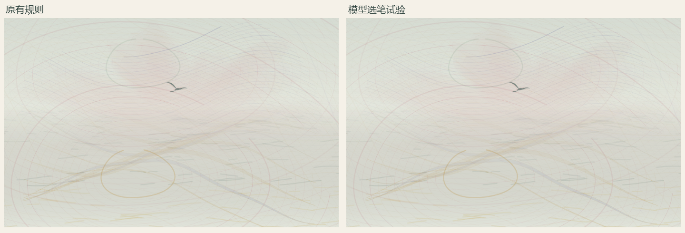
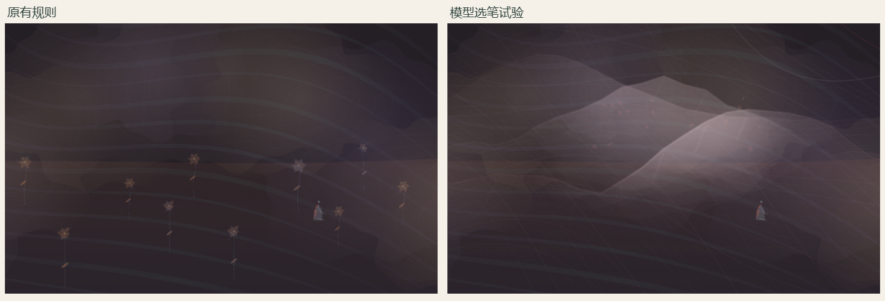
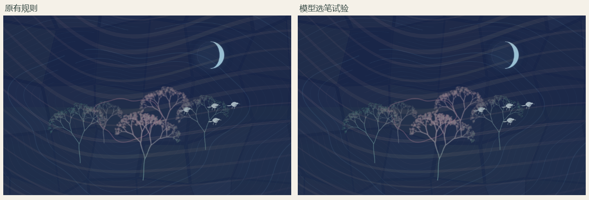
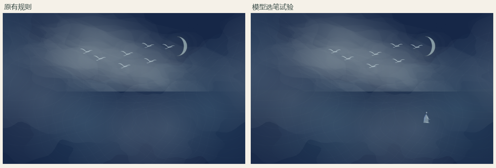
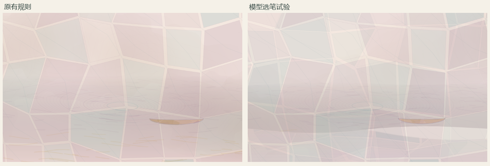
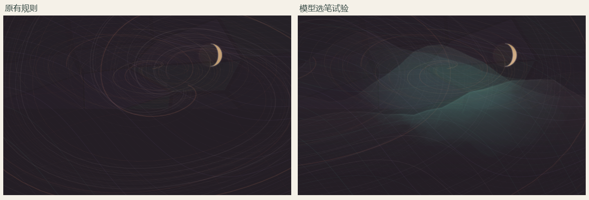
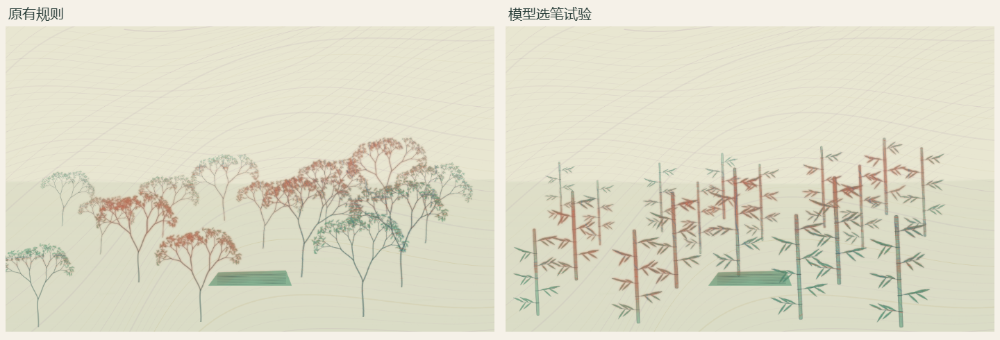

一道残阳铺水中，半江瑟瑟半江红。
白居易 · 暮江吟 · 光色与水面

原有：水／江 water
模型试验实际采用：水／江 water
行到水穷处，坐看云起时。
王维 · 终南别业 · 人物与动作时序
选笔结果未通过检查，本组无对照图。
荷风送香气，竹露滴清响。
孟浩然 · 夏日南亭怀辛大 · 气味、声音与依托

原有：竹露 bamboo；荷风 lotus
模型试验实际采用：竹露 bamboo；荷风 lotus
落霞与孤鹜齐飞，秋水共长天一色。
王勃 · 滕王阁序 · 数量、色彩与天水

原有：落霞 landscape；长天 landscape；秋水 water；孤鹜 bird
模型试验实际采用：落霞 landscape；长天 landscape；秋水 water；孤鹜 bird
人闲桂花落，夜静春山空。
王维 · 鸟鸣涧 · 夜色、落花与主体

原有：人 figure；桂花 flower
模型试验实际采用：人 figure；春山 landscape；桂花 falling-petals
明月别枝惊鹊，清风半夜鸣蝉。
辛弃疾 · 西江月·夜行黄沙道中 · 月、鸟与声音

原有：明月 moon；枝 tree；鹊 bird
模型试验实际采用：明月 moon；枝 tree；鹊 bird
月黑雁飞高，单于夜遁逃。
卢纶 · 塞下曲 · 夜色、缺月光与动作

原有：月 moon；雁 bird
模型试验实际采用：单于 figure；月 moon；雁 bird
潮平两岸阔，风正一帆悬。
王湾 · 次北固山下 · 宽幅、数量和帆

原有：潮 water；一帆 boat
模型试验实际采用：两岸 landscape；潮 water；一帆 boat
大漠沙如雪，燕山月似钩。
李贺 · 马诗 · 比喻与月形

原有：月 moon
模型试验实际采用：燕山 landscape；月 moon
独坐幽篁里，弹琴复长啸。
王维 · 竹里馆 · 人物、竹与乐器

原有：琴 instrument；幽篁 tree
模型试验实际采用：琴 instrument；幽篁 bamboo